All of our products are not animal tested and are environmentally friendly. Find your favourite colour and order now! Satisfaction is absolutely guaranteed or your money back. Let use know what you think of our products at www.letusknowstuff.com.
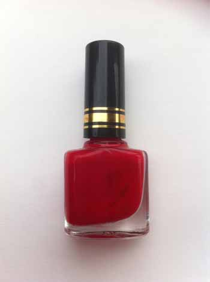
Tomato
This red was named after the vegetable because it is vibrant and it has no shine.
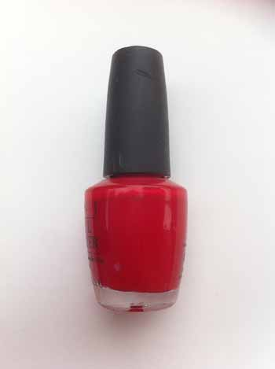
Red Velvet
An absolutely beautiful Red that slightly shines in the light when you go outside.
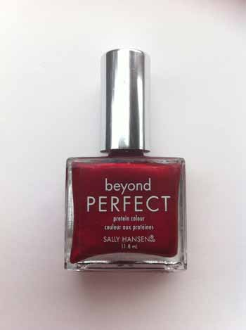
Red Rose
This has a lot of shine to it and is the exact colour of a red rose, perfect for romantic occasions.
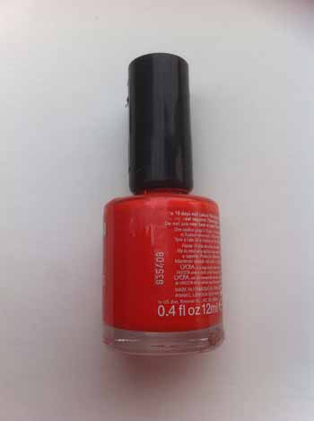
Fruity Orange
This colour is the exact colour of Oranges straight from forests of Florida.
Sparkly Orange
This Orange is perfect for sunny days on the beach or pool parties.
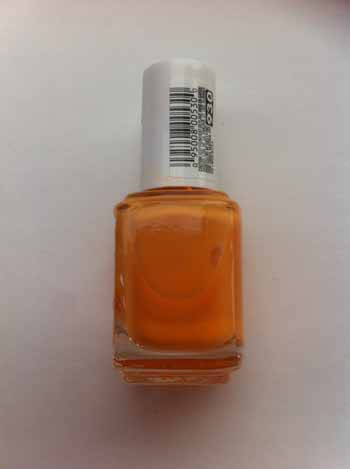
Tiger Lily
This Orange matches the beautiful Tiger Lilies that are found in Asian countries.
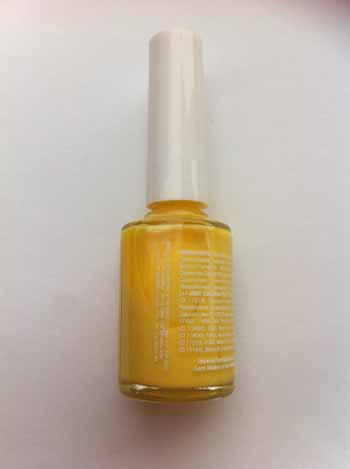
Buttercup
The cute little buttercup flowers that are found almost everywhere in Canada match this awesome nail polish.
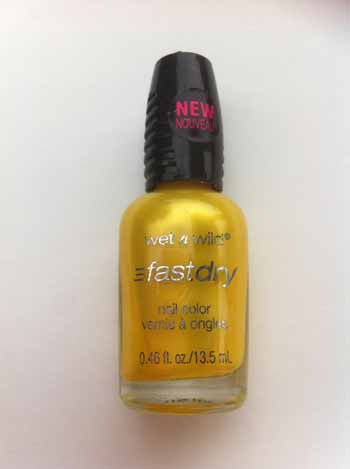
Sunshine
We created this colour to bring light and sunshine to your gloomy days.
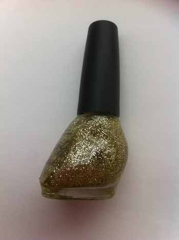
Gold
For your inner party girl, this nail polish is perfect for those nights out.
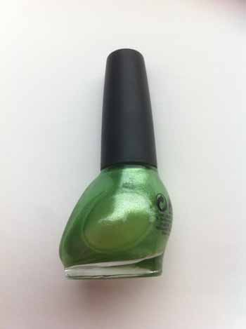
Leafy
If you love nature and trees this nail polish is perfect for you.
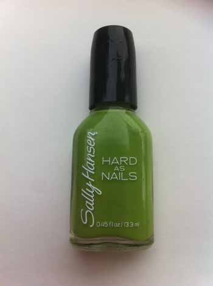
Grass
There are many people who enjoy running through grass, this nail polish will remind you of that everyday.
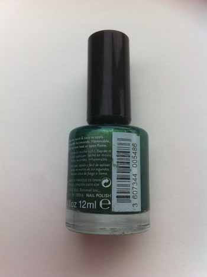
Evergreen
If you love Christmas trees this nail polish will help you celebrate the holiday whenever you feel like it.
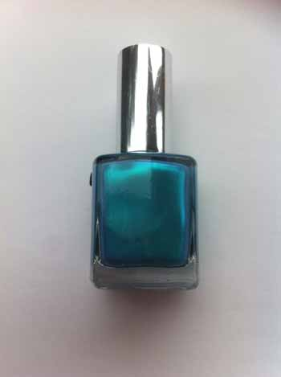
Sky
We created this colour to perfectly match the colour of the sky.
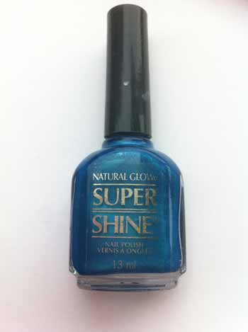
Ocean
If you love the vast blue ocean you will love the colour of this nail polish.
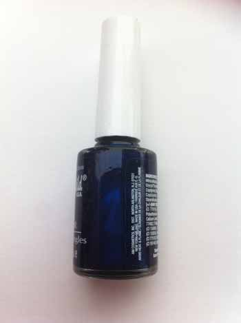
Silk
This nail polish is silky and clean. The dark colour is perfect for winter time.
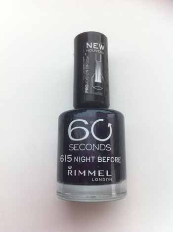
Night
This purple was based off of the night sky; it is perfect for cozy nights.
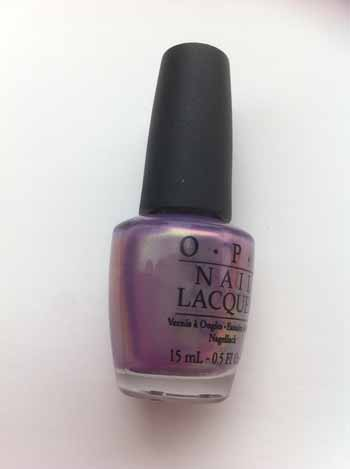
Lavender
We actually made this nail polish smell like lavender so if you love that flower this nail polish is for you.
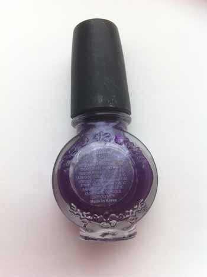
Party Purple
This nail polish is for all those nights of partying, and it glows in the dark!
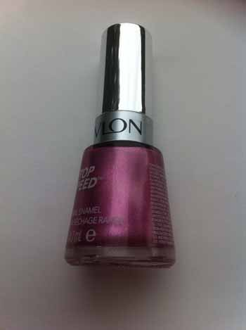
Flower Pink
This pink is fun and vibrant, perfect for those girly girls who enjoy life.
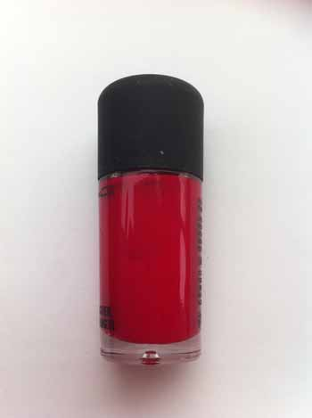
Hot Pink
This colour is sexy and flirty; if you love pink and want a little more edge to it this nail polish is for you.
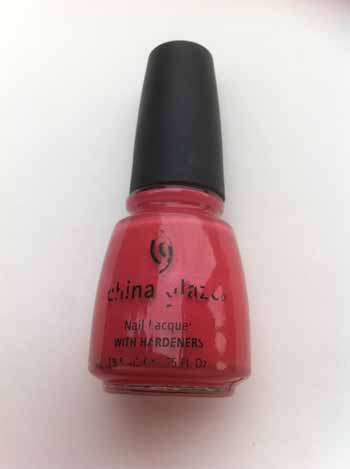
Beachy
Perfect for those sunny days by the ocean. Enjoy the sun and this nail polish colour during summer time.